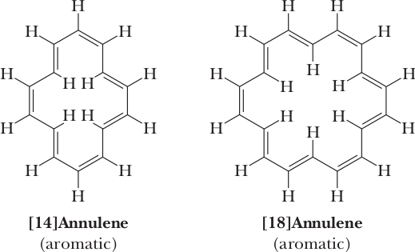

The Hückel Criteria for Aromaticity
The molecular orbital and resonance theories are powerful tools with which chemists can understand the unusual stability of benzene and its derivatives. According to resonance theory, benzene is best represented as a hybrid of two equivalent contributing structures. By analogy, cyclobutadiene and cyclooctatetraene can also be represented as hybrids of two equivalent contributing structures. Is either of these compounds aromatic?
The answer for both compounds is no. Repeated attempts to isolate cyclobutadiene have all failed. It was not until 1965 that it was finally synthesized, and, even then, it could only be detected if trapped at 4°K (2269°C). Cyclobutadiene is a highly unstable compound and does not show any of the chemical and physical properties we associate with aromatic compounds. Cyclooctatetraene has chemical properties typical of alkenes. It reacts readily with halogens and halogen acids, as well as with mild oxidizing and reducing agents. We are then faced with the broad question: “What are the fundamental principles underlying aromatic character?” In other words, what are the structural characteristics of unsaturated compounds that have a large resonance energy and do not undergo reactions typical of alkenes but rather undergo substitution reactions?
The underlying criteria for aromaticity were recognized in the early 1930s by Erich Hückel, a German chemical physicist. He carried out MO energy calculations for monocyclic, planar molecules in which each atom of the ring has one 2p orbital available for forming sets of molecular orbitals. His calculations demonstrated that monocyclic, planar molecules with a closed loop of 2, 6, 10, 14, 18, ... π electrons in a fully conjugated system should be aromatic. These numbers are generalized in the (4n + 2) π electron rule, where n is a positive integer (0, 1, 2, 3, 4, ...). Con- versely, monocyclic, planar molecules with 4nπ electrons (4, 8, 12, 16, 20, ...) are especially unstable and are said to be antiaromatic. We will have more to say about antiaromaticity shortly. Hückel’s criteria for aromaticity are summarized as follows. To be aromatic, a compound must:
Be cyclic.
Have one 2p orbital on each atom of the ring.
Be planar or nearly planar so that there is continuous or nearly continuous overlap of all 2p orbitals of the ring.
Have a closed loop of (4n + 2) π electrons in the cyclic arrangement of 2p orbitals.
To appreciate the reasons for aromaticity and antiaromaticity, we must examine MO energy diagrams for the molecules and ions we will consider in this and the following section. The relative energies of the p MOs for planar, monocyclic, fully conjugated systems can be constructed quite easily using the Frost circle, or inscribed polygon method. To construct such a diagram, draw a circle and then inscribe in it a polygon of the same number of sides as the ring in question. Inscribe the polygon in such a way that one of its vertices is at the bottom of the circle. The relative energies of the MOs in the ring are then given by the points where the vertices touch the circle. Those MOs below the horizontal line through the center of the circle are bonding MOs. Those on the horizontal line are non- bonding MOs, and those above the line are antibonding MOs. Figure 21.6 shows Frost circles describing the MOs of monocyclic, planar, and fully conjugated four-, five-, and six-membered rings. This apparently coincidental method works because it reproduces geometrically the mathematical solutions to the wave equation.
Aromatic Hydrocarbons
Cyclobutadiene, benzene, and cyclooctatetraene are the first members of a family of molecules called annulenes. An annulene is a cyclic hydrocarbon with a continuous alternation of single and double bonds. The name of an annulene is derived by showing the number of atoms in the ring in brackets followed by the word annulene. Named as annulenes, cyclobutadiene, benzene, and cyclooctatetraene are [4]annulene, [6]annulene, and [8]annulene, respectively. These compounds, however, are rarely named as annulenes. Beginning in the 1960s, Franz Sondheimer and his colleagues, first at the Weizmann Institute in Israel and later at the University of London, synthesized a number of larger annulenes, primarily to test the validity of Hückel’s criteria for aromaticity. They found, for example, that both [14]annulene and [18]annulene are aromatic, as predicted by Hückel. [18]Annulene has a resonance energy of approximately 418 kJ (100 kcal)/mol. Notice that, for these annulenes to achieve planarity, several of the carbon-carbon double bonds in each must have the trans configuration.
In these larger annulenes, there are two sets of equivalent hydrogens: those that point outward from the ring and those that point inward to the center of the ring. The fact is that these two sets of equivalent hydrogens have quite different 1 H-NMR chemical shifts. The protons on benzene and other arenes are deshielded and appear far downfield (usually around 7–8 ppm) because of the induced ring current that occurs in aromatic molecules (Section 13.7C). The effect of induced ring current is characteristic not only of benzene and its derivatives but also of all compounds that meet the Hückel criteria for aromaticity. This concept of a circulating ring current and of an induced magnetic field predicts that hydrogen atoms on the outside of the ring should come into resonance with a downfield shift. It also predicts that a hydrogen atom in the inside of the ring should come into resonance farther upfield. Of course, no hydrogens are on the inside of the benzene ring, but with larger aromatic annulenes, as for example [18]annulene, there are both “inside” hydrogens and “outside” hydrogens. The degree of the upfield chemical shift of the inside hydrogens of [18]annulene is remarkable. They come into resonance at d 23.00; that is, at 3.00 d units upfield (to the right) of the TMS standard.
Antiaromatic compounds
According to the Hückel criteria, monocyclic, planar molecules with 4n π electrons (4, 8, 12, 16, 20, ...) are especially unstable and are said to be antiaromatic. By these criteria, cyclobutadiene with 4 π electrons is antiaromatic. Using the Frost circle energy diagram from Figure 21.6, we can construct a molecular orbital energy diagram for cyclobutadiene (Figure 2). In the ground-state electron configuration of cyclobutadiene, two π electrons fill the π1-bonding MO. The third and fourth π electrons are unpaired and lie in the π2- and π3-nonbonding MOs. The existence of these two unpaired electrons in planar cyclobutadiene makes this molecule highly unstable and reactive compared to butadiene, a noncyclic molecule containing two conjugated double bonds. It has been found that cyclobutadiene is not planar, but slightly puckered with two shorter bonds and two longer bonds, which makes the two degenerate orbitals no longer equivalent; nevertheless, it retains some apparent diradical character.
Cyclooctatetraene shows reactions typical of alkenes and is classified as non-aromatic. X-ray studies show clearly that the most stable conformation of the molecule is a nonplanar “tub” conformation with two distinct types of carbon-carbon bonds: four longer carbon-carbon single bonds and four shorter carbon-carbon double bonds. The four single bonds are equal in length to the single bonds between sp2 hybridized carbons (approximately 146 pm), and the four double bonds are equal in length to double bonds in alkenes (approximately 133 pm). In the tub conformation, the overlap of 2p orbitals on carbons forming double bonds is excellent, but almost no overlap occurs between 2p orbitals at the ends of carbon-carbon single bonds because these 2p orbitals are not parallel. Thus the π system in cyclooctatetraene is not conjugated despite having continuous sp2 hybridized carbon atoms.